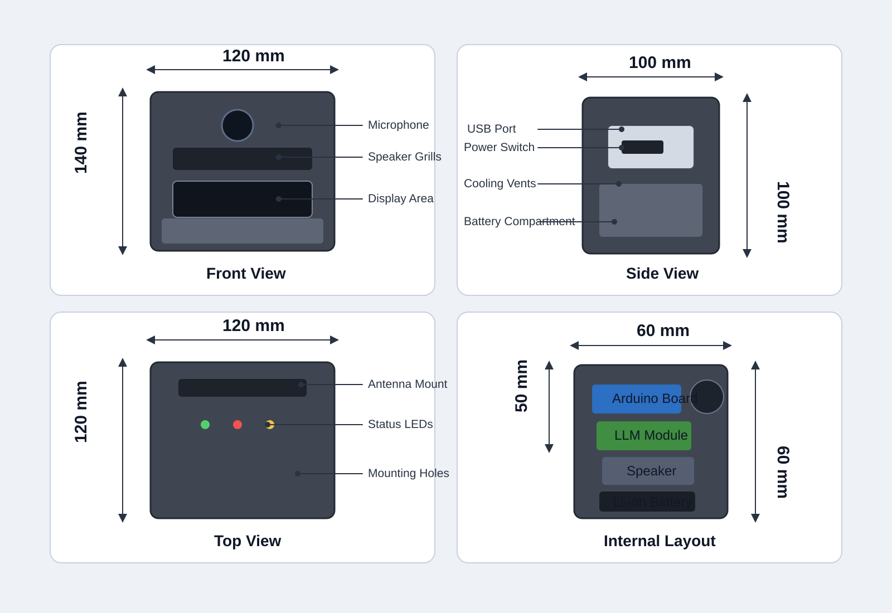
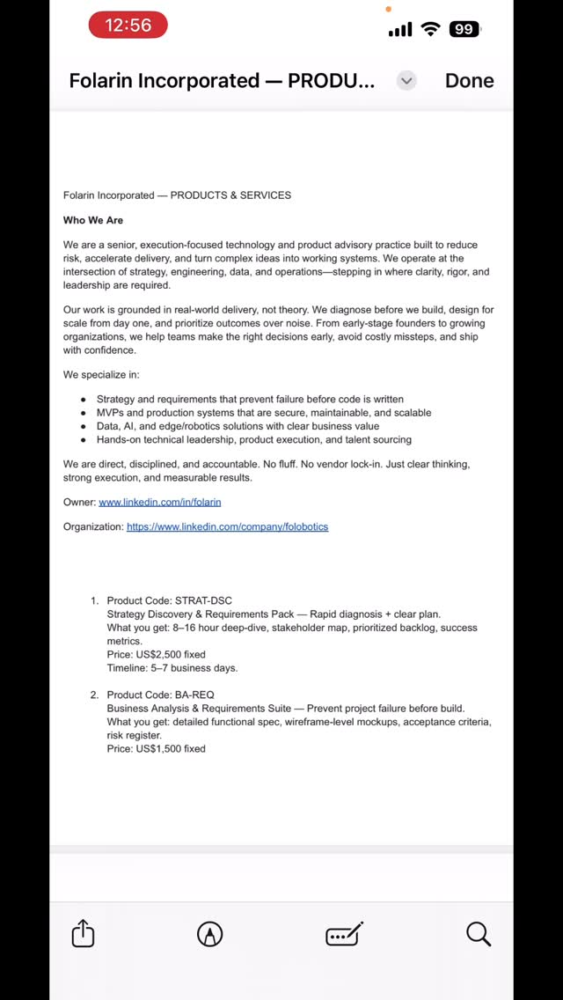
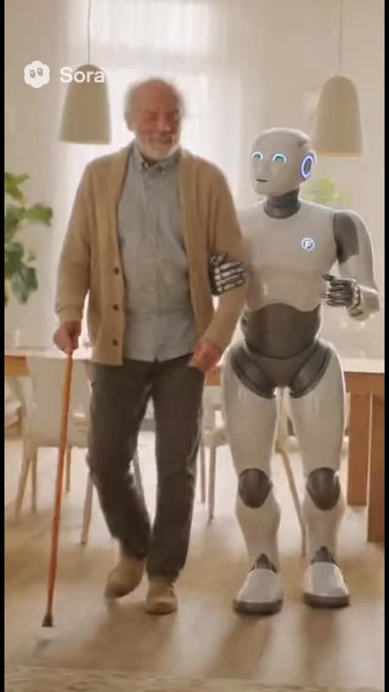
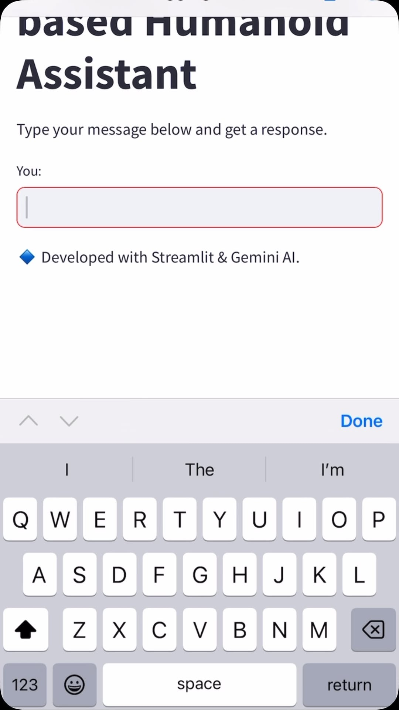
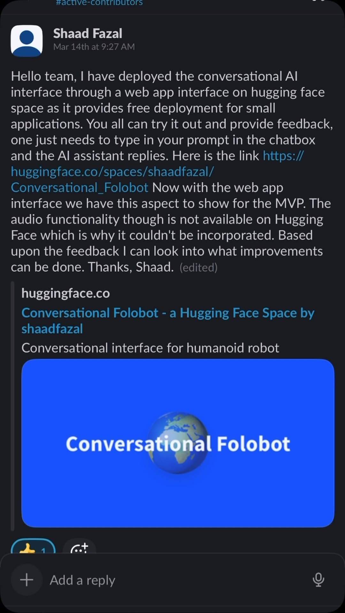

0
Core Modules in Rev 1
FoloBotics - MVP Revision 1
The concept image is approved for prototyping. Revision 1 now focuses on only essential modules so the team can iterate faster with Arduino-based deployment and rapid 3D printing.
Core Modules in Rev 1
Exterior Elements Deferred
Target Height (mm)
Vision Charter
Preserve all ideas as backlog. Curate in phases so prototype decisions remain intentional and traceable.
Robot reads human emotion and displays emotion on face or chest screen for natural interaction in later revisions.
Fire rescue capability, robbery response with controlled force, thermal and threat analysis, and non-lethal deterrence.
Handle indoor chores, outdoor chores, ladder tasks, light-bulb replacement, ladder analysis, and gutter cleaning.
Sleep/charge corner mode plus chair/couch transform mode with armrest and headrest behavior.
Eyes as camera, ears as microphone, voice through speakers, touch-capacitive skin, palm-first sensing, and material recognition.
Plant-like healing skin and oxygen-support simulation concepts, including banana leaf biomimicry placeholders.
Auto docking, hand-contact charging, and close-range radio-wave phone charging exploration.
"Pair down ideas to only a few features."
"The best part is no part."
Design Process
The latest prototype drawing is now embedded here as the single design-process reference for Revision 1 alignment.

Reference Collection
These references support enclosure decisions and visual alignment while Revision 1 stays focused on core hardware.




Future Backlog
Rule: Add notes. Do not delete ideas. Grammar edits are allowed. Add ideas first, curate later.